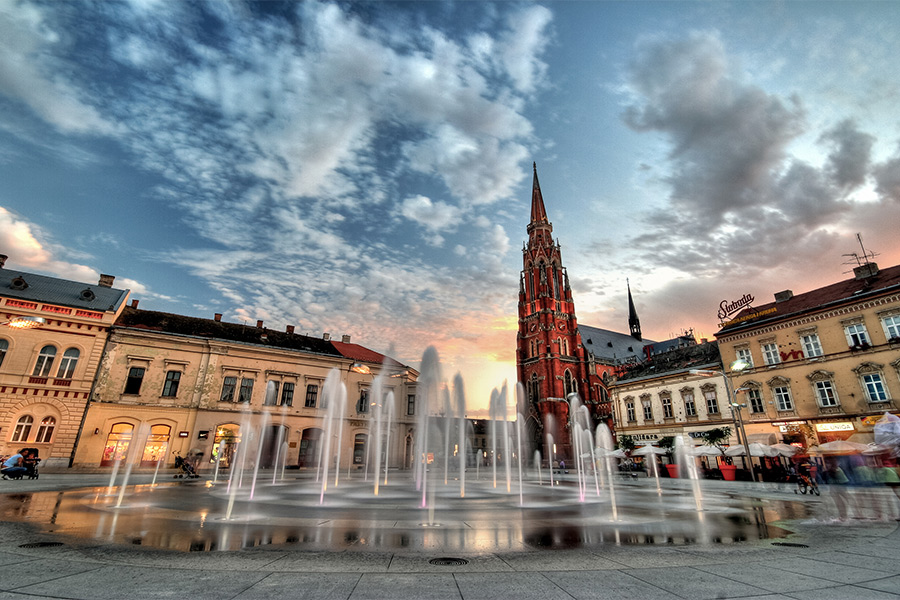

Barrage je tehnološka tvrtka koja postoji već 8 godina, a primarno se bave razvojem kompleksnih informatičkih rješenja kroz vlastite usluge, pružaju usluge korisničke podrške za digitalne proizvode koje razvijaju te razvijaju i održavaju specijalizirane podatkovne centre.

Base58 je tvrtka koja se najviše bavi razvijanjem prilagođenih blockchain rješenja, rješavaju probleme iz stvarnoga života i educiraju ljude oko sebe i u gradu Osijeku.

COBE (Creators Of Beautiful Experiences) je digitalna agencija sa sjedištem u Münchenu i uredom u Osijeku. Iako je u početku tim u Osijeku uglavnom bio zadužen za development, danas uz developere imamo i cijeli tim dizajnera koji priprema dizajn strategiju, radi na digitalnom brandingu te UI i UX dizajnu. Development tim onda razvija digitalne proizvode poput mobilnih aplikacija ili web stranica, a uz sve to radimo i Code, UX te QA review-ove.

Inchoo je osnovan u Osijeku u svibnju 2008. godine kao tvrtka koja pruža cjelovita Magento rješenja – usluge planiranja, savjetovanja, dizajna, izrade, optimizacije i podrške. Magento je profesionalno softversko rješenje za online trgovine zasnovano na open-source tehnologiji koja korisnicima nudi potpunu fleksibilnost i kontrolu nad izgledom, sadržajem i funkcionalnošću njihovih trgovina. Od srpnja 2010. Inchoo je svoj odnos s Magentom dodatno učvrstio postavši prvi službeni partner u jugoistočnoj Europi i jedan od partnera s najvećim brojem certificiranih stručnjaka u Magentu – 20 certificiranih developera i 11 Solution Specialista.

Infobip je vodeća globalna IT i telekomunikacijska tvrtka koja pruža usluge mobilnih komunikacija u oblaku za poslovne korisnike te im omogućava da dostavljaju poruke preko bilo kojeg kanala, bilo kojeg uređaja, u bilo koje vrijeme i bilo gdje u svijetu.

Mono d.o.o. je tvrtka za razvoj softvera, osnovana 2003. godine u Osijeku. Trenutno zapošljavaju 60ak ljudi, a za poslovne su rezultate primili veći broj različitih priznanja i nagrada (Zlatna kuna, Deloitte Technology Fast 50, European Business Awards). Preko 90% prihoda ostvaruju u inozemstvu, kao najveći izvoznik softvera u regiji i jedan 50 najvećih hrvatskih izvoznika softvera. Surađuju s Microsoftom u statusu “Gold partnera”. Proizvode Backend-as-a-Service (BaaS) rješenja, sustave za upravljanje sadržajem, aplikativne okvire za razvoj intraneta i društvenih mreža, te razna specijalizirana rješenja u farmaciji, medicini, bankarstvu, financijama, upravljanju ljudskim resursima, tržištu nekretnina i drugim granama. Neka od njihovih rješenja uključuju napredne tehnologije, poput strojnog učenja i rudarenja podataka, a za izvođenje koriste različite vrste “cloud” okruženja.
Ofir je IT tvrtka u Osijeku koja gradi i promovira web rješenja te održava računalne sustave. Njihova je misija unaprjeđivati IKT segment usluga prema domaćem i inozemnom tržištu uz potpuno usklađivanje s trendovima i željama klijenata
Evo nekoliko riječi od samog Ofira:
Cijenjeni posjetitelji, naša poslovna priča počinje već 1993. godine kada smo osnovani, a praćenjem tržišnih tijekova, 2000. godine orijentirali se na informatičke usluge. Gradimo i promoviramo web rješenja te održavamo računalne sustave. Lokalni smo, a djelujemo globalno!
Prototyp je tvrtka koja dizajnira i razvija poslovna rješenja za sportsku, financijsku, zdravstvenu, retail i gaming industriju.
SPECTRE d.o.o. je start-up tvrtka osnovana 2016. godine i bavi se istraživanjem i razvojem softverskih rješenja za pametne uređaje i holografska računala korištenjem tehnologija virtualne, proširene i mješovite stvarnosti.
Grupacija TTTech Auto CEE je nastala 2012. godine na temeljima suradnje kompanija RT-RK i TTTech, kroz zajednički rad na razvoju softvera u automobilskoj industriji. Uz urede u Novom Sadu, Beogradu i Banja Luci, osnovana je i tvrtka u Osijeku u ožujku 2015. godine kao rezultat suradnje Fakulteta elektrotehnike, računarstva i informacijskih tehnologija Osijek i Istraživačko-razvojnog Instituta RT-RK Novi Sad. Danas u Osijeku broje više od 150 zaposlenih inženjera.
Ova sveobuhvatna IT konferencija nudi niz visokokvalitetnih treninga u ključnim područjima uključujući razvoj, dizajn, podatke, ITPro i upravljanje projektima.
Tri prilagođena dana puna treninga, razgovora i aktivnosti izgradnje tima. Uživanje u odličnoj glazbi, tradicionalnoj slavonsko-baranjskoj kuhinji, domaćem craft pivu i nagrađivanim vinima.
The Geek Gathering dvodnevna je konferencija koja se održava početkom listopada. Ove godine održala se na 3 lokacije u Osijeku: Kino Urania, Gradska i Sveučilišna Knjižnica i Caffe Bar Trica.
Ova konferencija okuplja stručnjake, entuzijaste i ljubitelje tehnologije iz raznih industrija, pružajući im priliku da se upuste u duboke diskusije, sudjeluju u interaktivnim radionicama i predavanjima te steknu uvid u najnovije trendove i inovacije.
Konferencija obuhvaća različite tematske module, uključujući umjetnu inteligenciju, razvoj softvera, dizajn, blockchain tehnologiju, virtualnu i proširenu stvarnost te mnoge druge zanimljive sfere.

Poduzetnička zona „IT park“ Osijek je specijalizirana mikro gospodarska zona. Namijenjena je tvrtkama koje posluju u sektoru Informacijskih Tehnologija (IT).
Nalazi se u širem centru grada i kvalitetno je prometno povezana- neposredno uz zonu postoji javni prijevoz (tramvaj, biciklistička i pješačka staza), a zona se nalazi uz jednu od glavnih gradskih prometnica koja je neposredno povezana sa južnom obilaznicom.
Grad Osijek želi biti regionalno središte IT industrije, a cilj Poduzetničke zone „IT park“ je stvoriti konkurentno poslovno okruženje koje će osigurati rast i razvoj IT sektora, privući domaće i inozemne ulagače te dodatno potaknuti gospodarski razvoj Grada.